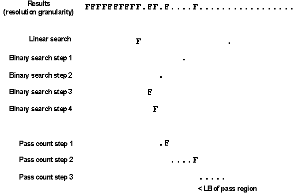

Using embedded timing and level search on a Smart Scale system
On a Smart Scale system, you can adjust the timing to the actual behavior of the DUT by an embedded timing or level search.
Timing search
In general, the operation mode of the embedded timing search is similar to the parallel timing search performed with DPSR, EXSR, and RSSR, namely to detect PASS/FAIL or FAIL/PASS transitions within a search range, and to locate the transition points as exactly as possible. The main difference is that with the embedded search, the search algorithm is executed by an embedded processor, and not on the workstation.
Advantages of embedded search
The advantages of the embedded search over the parallel timing search are the following:
- The search is faster when used with many pins, because the edge positions for the next search step need not be downloaded serially for every setup pin.
- The embedded search provides some additional functionality, which will be described below.
General mode of operation
The embedded search does not rely on spec variables, but modifies edge positions directly. You cannot move a single edge, but only all edges of the same type (for example, fast or slow drive edges) in parallel. Setup and result pins are independent of each other, but must belong to the same test processor.
The search can be configured differently for every pin. The search range is defined relative to the edge positions that are defined in the current primary timing set of the current primary timing specification. In case of a multi-port setup, the respective pin uniquely identifies the port and thus the correct timing set.
The search is basically a combination of an initial linear search, followed by a binary search. The linear search can run in standard mode and in FASTSTOP mode. In both modes it first looks for an area of consecutive PASS results that is enclosed by a FAIL result on both ends. Only if no such area is present, PASS areas that are closed on only one end are also taken into account. The difference between the two modes is that in standard mode, the linear search scans the whole search range for the largest such PASS area, whereas in FASTSTOP mode it selects the first such area. For examples, see FASTSTOP search mode
You can choose between three possible search results, namely the start (FAIL/PASS transition), the middle (eye), or the end (PASS/FAIL transition) of the largest pass area within the search range. The selected result is stored for every edge of the selected type as an offset from the delay defined by the current primary timing setup, and is added to this delay when a test with this timing is executed.
It is possible to store different offsets for different pairs of specification and timing set simultaneously for the same pin. It is also possible to copy the offsets that were determined for one such pair to other timing sets of the same or another specification.
Specific options
There are the following specific additional options:
- You can weaken the requirements for counting a test as passed by defining a maximum number of errors that is still to be tolerated.
- You can move the start (end) of the PASS area, as determined by the binary search, to the
right (left) so far that it starts (ends) with n consecutive PASS results,
where n is definable by the user. The step width of this additional search
step equals the resolution of the binary search.
This feature is intended to exclude that any isolated FAIL results are still (already) present at the start (end) of the putative PASS region.
- Alternatively, you can move the start (end) of the PASS area, as determined by the binary
search, to the left (right) into the error region. This histogram based search will
determine, at every search step, the number of errors, and then calculate the difference
between this number and the error count of the previous step. The search will be stopped when
this difference is 0 (that is, the error count is stable) for m consecutive
steps. The number of steps m and the step width of the search are definable
by the user.
The start (end) of the PASS area will then be set to the centroid of all calculated error differences. The formula is
x1*p1 + x2*p2 + ... + xn*pn
_______________________________ .
x1 + x2 + ... + xn
Here, xi is the difference between the ith and the i+1th error count, and pi = (di+di+1)/2, where di is the position of step i on the time axis.
This feature is intended, for example, to determine a transition more precisely.
- The FASTSTOP mode is a search mode different to the standard search mode. It supports the search types eye and single transition (see Linear search modes and TOCF). The binary search, which is executed after the linear search, is not affected.
Setup and result pins
The setup pins, that is, the pins whose edge positions are modified during the search, and the result pins, that is, the pins on which the outcome of the tests is to depend, need not be identical. Different setup pins can be associated with different sets of result pins.
But as the timing search is done locally in the test processor (TP), setup and result pins must belong to the same TP.
Related firmware commands and test method APIs
An embedded timing search is configured with the TOCF command. The search is executed with the TORN? query. The search results can be queried with the TORT? query, which returns the boundaries of the largest pass region, or the TORS? query, which returns the current offset. You can copy the offsets for one timing set of a specification to one or more timing sets of the same or another specification with TORC. You can define the result pins for a setup pin with the TOCR command.
The test method APIs for an embedded timing search are
Examples
Binary search for the left boundary
The following example shows a binary search for the left boundary (FAIL/PASS transition) with a minimal pass count of 5 (a dot denotes PASS):

Note the following points in the graphic:
- It is to be understood that the largest PASS area of the linear search starts with the dot in the Linear Search line.
- To make the graphic more perspicuous, it is assumed that every transition occurs at a multiple of the binary search resolution.
- The required 5 consecutive PASS values are found after three additional steps.
Level search
In general, the embedded level search works according to the same principles as the timing search. In particular, you can also restrict the level search to individual pins. The firmware commands and test method APIs with which the search is configured and executed are also the same for both level and timing search.
Note that a positive step width means that the level is increased, and a negative step width that it is diminished.
You can combine level searches with timing searches, but not on the same pin at the same time: If you define, for example, first a level search for a pin with TOCF, and then a timing search for the same pin, the timing search configuration will overwrite the level configuration.
Functional changes
- Introduced in SmarTest 7.0.3
- SmarTest 7.1.0: Histogram based search was added. ECL option for transition_detection parameter was added. Setup pins and result pins need no longer be identical.
- SmarTest 7.2.0: New search mode FASTSTOP
- SmarTest 7.3.2: The algorithm of the linear search in standard mode was assimilated to that of FASTSTOP mode.